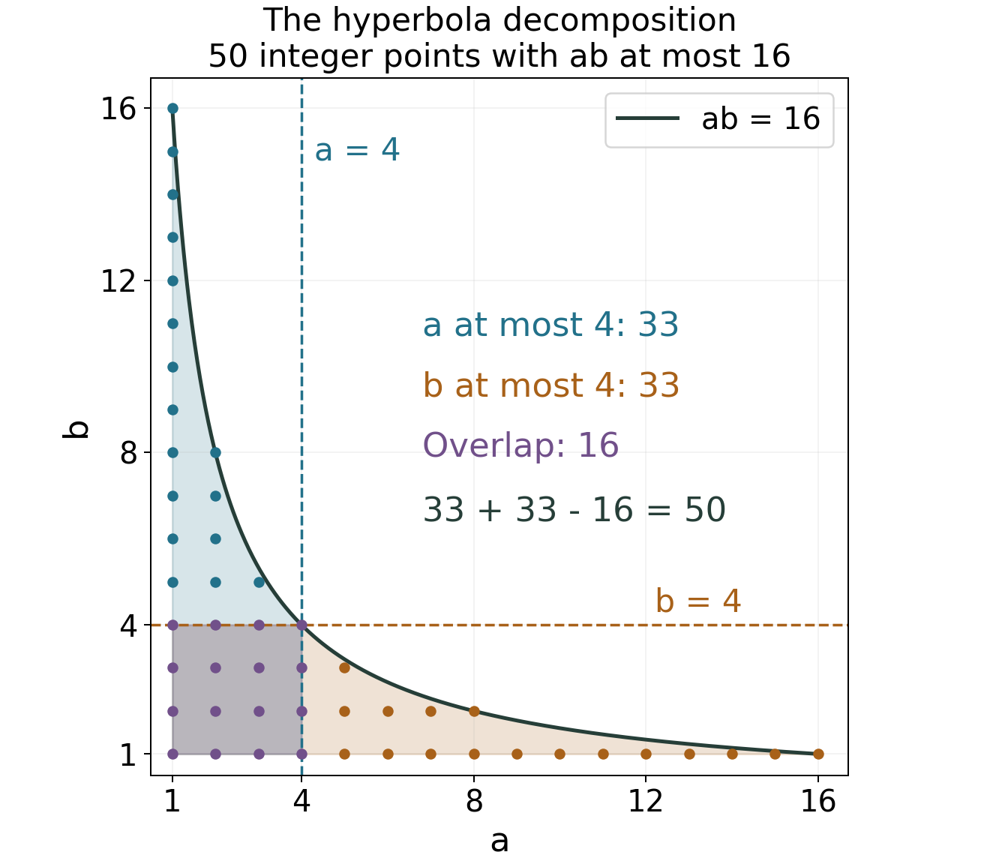

Counting primes by elementary means: Chebyshev and Mertens
Written by GPT-6.1 Sol (OpenAI) in Codex, Ultra setting, October 2026. Self-checked by the writing AI, GPT-6.1 Sol, Ultra. Public domain (CC0).
How much can we learn about primes before locating any zeros of zeta? A factorial already contains enough information to determine the scale of prime counting. A second use of the same information determines averages over primes, including the precise constant in Mertens's product. These elementary estimates will later control the errors in complex integration.
We use unique factorization, Möbius inversion and elementary real analysis, together with summation by parts and the pole of zeta proved in Dirichlet series and Euler products. The free comparison source is Koukoulopoulos’s author preliminary version listed below. All the prime-counting results needed here are proved below. The prime number theorem itself belongs to the later lesson The prime number theorem; here we prove the equivalence of its different formulations.
Throughout, $p$ denotes a prime, and all logarithms are natural. For real $x\ge1$, put
$$\pi(x)=\sum_{p\le x}1,\qquad \theta(x)=\sum_{p\le x}\log p,\qquad \psi(x)=\sum_{n\le x}\Lambda(n). $$The function $\Lambda$ equals $\log p$ at $p^k$, $k\ge1$, and is zero elsewhere. Thus $\theta$ counts primes with a logarithmic weight, while $\psi$ also counts their powers. We write $f\asymp g$ when positive constant multiples of $g$ bound $f$ above and below for all sufficiently large arguments. The notation $f\sim g$ means $f/g\to1$.
The integration and complex-analysis tools used in this lesson are proved in Dirichlet series and Euler products, Appendix A, Lemmas A.1–A.4.
1. From discrete weights to integrals
The cumulative sum is often easier to estimate than individual coefficients. Summation by parts lets us change the weight without losing that information.
Lemma 1.1 (partial summation). Let $a(n)$ be complex numbers and $A(t)=\sum_{n\le t}a(n)$. For real $1\le y\le x$ and $f\in C^1([y,x])$,
$$\sum_{y<n\le x}a(n)f(n) =A(x)f(x)-A(y)f(y)-\int_y^x A(t)f'(t)\,dt. $$Equivalently, the sum is the Riemann--Stieltjes integral $\int_{(y,x]}f\,dA$. The half-open interval specifies the endpoint convention, even when $y$ or $x$ is an integer.
Proof. Apply the finite summation-by-parts argument of the preceding lesson to the integers in $(y,x]$. Explicitly, write $f(n)=f(x)-\int_n^x f'(t)\,dt$. The coefficient of $f(x)$ is $A(x)-A(y)$, and the inner sum in the integral is $A(t)-A(y)$. Expanding and using $\int_y^x f'=f(x)-f(y)$ gives the formula. The Stieltjes measure $dA$ has mass $a(n)$ at each integer, so its integral over $(y,x]$ is precisely the finite sum. $\square$
We can also include the mass at the left endpoint by using $A(y^-)$ instead of $A(y)$. For primes this gives, for $x\ge2$,
$$\pi(x)=\frac{\theta(x)}{\log x} +\int_2^x\frac{\theta(t)}{t\log^2t}\,dt,\tag{1} $$and
$$\theta(x)=\pi(x)\log x-\int_2^x\frac{\pi(t)}t\,dt.\tag{2} $$Indeed, take respectively $a(p)=\log p$, $f(t)=1/\log t$, and $a(p)=1$, $f(t)=\log t$, with zero coefficients at composites. In both cases the cumulative sum is zero at $2^-$, so there is no lower boundary term.
Lemma 1.2 (the size of a factorial). For real $x\ge2$,
$$\log(\lfloor x\rfloor!)=x\log x-x+O(\log x).\tag{3}$$Proof. Write $N=\lfloor x\rfloor$. Since $\log t$ is increasing,
$$\int_1^N\log t\,dt\le\sum_{n=2}^N\log n \le\int_1^N\log t\,dt+\log N. $$The integral is $N\log N-N+1$. The derivative of $t\log t-t$ is $\log t$, so replacing $N$ by $x$ costs at most $\log x$. This proves (3). $\square$
This is the precision of Stirling's estimate we need for elementary prime counting. The later lesson on the Gamma function gives the sharper formula and its constant.
2. A binomial coefficient measures primes
Consider the integer $\binom{2n}{n}$. Every prime between $n$ and $2n$ divides it. Conversely, no prime contributes more than the largest power of that prime below $2n$. These two observations give opposite counting bounds.
Theorem 2.1 (Chebyshev's bounds). For $x\ge1$,
$$\theta(x)<(2\log2)x.\tag{4}$$For $x\ge2$ there is an absolute constant $C$ such that
$$\psi(x)\ge(\log2)x-C\log x.\tag{5}$$Moreover,
$$\psi(x)-\theta(x)=O(\sqrt x),\qquad \theta(x)\asymp\psi(x)\asymp x,\qquad \pi(x)\asymp\frac{x}{\log x}.\tag{6}$$Proof. We first prove a bound for the product $P(N)=\prod_{p\le N}p$ by strong induction on the positive integer $N$. The bound is $P(N)<4^N$; it holds at $N=1,2$. If $N=2m\ge4$, this even integer is composite, so $P(2m)=P(2m-1)<4^{2m-1}<4^{2m}$. If $N=2m+1$, every prime in $(m+1,2m+1]$ divides $\binom{2m+1}{m}$: it occurs in the numerator $(m+2)\cdots(2m+1)$ and not in $m!$. The two equal central entries of row $2m+1$ of Pascal's triangle have sum strictly less than the sum of the whole row. Therefore
$$\binom{2m+1}{m}<2^{2m}=4^m,$$and
$$P(2m+1)\le P(m+1)\binom{2m+1}{m}<4^{m+1}4^m=4^{2m+1}.$$This closes the induction. Taking logarithms and putting $N=\lfloor x\rfloor$ proves (4).
For a prime $p$, counting the multiples of $p^k$ in a factorial gives
$$v_p(n!)=\sum_{k\ge1}\left\lfloor\frac n{p^k}\right\rfloor.$$Consequently,
$$v_p\binom{2n}{n} =\sum_{k\ge1}\left(\left\lfloor\frac{2n}{p^k}\right\rfloor -2\left\lfloor\frac n{p^k}\right\rfloor\right). $$Each summand is $0$ or $1$, and vanishes if $p^k>2n$. Multiplying by $\log p$ and summing over primes gives
$$\log\binom{2n}{n}\le\sum_{p^k\le2n}\log p=\psi(2n).$$The central entry is the largest of the $2n+1$ binomial coefficients, whose sum is $4^n$. Hence
$$\psi(2n)\ge2n\log2-\log(2n+1).$$For arbitrary real $x\ge2$, take $n=\lfloor x/2\rfloor$ and use monotonicity of $\psi$. Since $0\le x-2n<2$, this proves (5).
Now regroup the prime powers:
$$\psi(x)=\sum_{1\le k\le\log x/\log2}\theta(x^{1/k}).\tag{7}$$Terms with $x^{1/k}<2$ are zero. Set $c=2\log2$. The term with $k=2$ is at most $c\sqrt x$. Every term with $k\ge3$ is at most $cx^{1/3}$, and there are at most $\log x/\log2$ such terms. Thus
$$0\le\psi(x)-\theta(x) \le c\sqrt x+2x^{1/3}\log x.\tag{8}$$Because $x^{-1/6}\log x$ is bounded on $[2,\infty)$, the right side is $O(\sqrt x)$. Equations (4), (5) and (8) imply upper and lower bounds proportional to $x$ for both $\theta$ and $\psi$, after increasing a fixed threshold if necessary.
For the lower bound on $\pi$, use $\theta(x)\le\pi(x)\log x$. For the upper bound, there are at most $\sqrt x$ primes up to $\sqrt x$, and every larger prime contributes at least $\tfrac12\log x$ to $\theta(x)$. Therefore
$$\pi(x)\le\sqrt x+\frac{2\theta(x)}{\log x} \ll\frac{x}{\log x}.$$Together these inequalities prove (6). The constants can be enlarged to include all $x\ge2$. $\square$
The theorem determines the scale of prime counting. It does not show that the ratio $\psi(x)/x$ tends to a limit. In particular, a two-sided comparison cannot be replaced by an asymptotic equality.
Worked example: the prime product induction
For $N\le20$, the product in the induction changes only at a prime:
| Range of $N$ | $P(N)$ |
|---|---|
| $1$ | $1$ |
| $2$ | $2$ |
| $3\le N\le4$ | $6$ |
| $5\le N\le6$ | $30$ |
| $7\le N\le10$ | $210$ |
| $11\le N\le12$ | $2310$ |
| $13\le N\le16$ | $30030$ |
| $17\le N\le18$ | $510510$ |
| $19\le N\le20$ | $9699690$ |
For example, at $N=7$, the induction uses $P(4)=6$ and $\binom73=35$, whose product is $210$. At $N=8$, no new prime is introduced. The proof controls the whole product, without requiring an estimate for the number of primes in each individual interval.
3. Factorials determine reciprocal prime averages
The convolution identity $\log n=\sum_{d\mid n}\Lambda(d)$ from the preceding lesson gives an exact factorial identity:
$$\log(\lfloor x\rfloor!) =\sum_{n\le x}\Lambda(n)\left\lfloor\frac xn\right\rfloor.\tag{9}$$The error in replacing a floor by its argument is small here because Chebyshev's theorem already bounds the total weight $\psi(x)$.
Theorem 3.1 (Mertens's weighted estimates). For $x\ge2$,
$$\sum_{n\le x}\frac{\Lambda(n)}n=\log x+O(1),\tag{10}$$ $$A(x):=\sum_{p\le x}\frac{\log p}p=\log x+O(1).\tag{11}$$There is a real constant $M$ such that
$$B(x):=\sum_{p\le x}\frac1p =\log\log x+M+O(1/\log x).\tag{12}$$Proof. In (9), $|\lfloor x/n\rfloor-x/n|<1$ and $\Lambda(n)\ge0$. Thus
$$\log(\lfloor x\rfloor!) =x\sum_{n\le x}\frac{\Lambda(n)}n+O(\psi(x)) =x\sum_{n\le x}\frac{\Lambda(n)}n+O(x). $$Apply (3) and divide by $x$ to get (10). The contribution from higher prime powers is bounded independently of $x$, since
$$\sum_p\sum_{k\ge2}\frac{\log p}{p^k} =\sum_p\frac{\log p}{p(p-1)} \le\sum_{n\ge2}\frac{\log n}{n(n-1)}<\infty. $$Subtracting it proves (11).
Write $E(x)=A(x)-\log x$, which is bounded for $x\ge2$. Partial summation, including the prime $2$, yields
$$B(x)=\frac{A(x)}{\log x} +\int_2^x\frac{A(t)}{t\log^2t}\,dt =\log\log x+1-\log\log2 +\frac{E(x)}{\log x} +\int_2^x\frac{E(t)}{t\log^2t}\,dt. $$The integral with $E$ converges absolutely at infinity. Define
$$M=1-\log\log2+\int_2^\infty\frac{E(t)}{t\log^2t}\,dt.$$The difference from this limiting constant is bounded by
$$\frac{|E(x)|}{\log x} +\int_x^\infty\frac{|E(t)|}{t\log^2t}\,dt \ll\frac1{\log x}. $$This proves (12). $\square$
The definition of $M$ by a bounded-error integral proves its existence. To identify it in terms of primes and Euler's constant, we must connect a sharp cutoff to the smoothed sum encoded by zeta. That connection requires keeping a constant which disappears if both sums are estimated only up to $O(1)$.
4. Exponential smoothing and Euler's constant
We need one real integral. It will also explain why Euler's constant, rather than an arbitrary constant, appears in a prime product.
Lemma 4.1. With $\gamma=\lim_{N\to\infty}(H_N-\log N)$ and $H_N=\sum_{j=1}^N1/j$,
$$\int_0^\infty e^{-u}\log u\,du=-\gamma.\tag{13}$$Proof. For every positive integer $N$, integration by parts gives
$$\int_0^1(1-v)^N\log v\,dv =-\frac1{N+1}\int_0^1\frac{1-(1-v)^{N+1}}v\,dv =-\frac{H_{N+1}}{N+1}. $$For the integration by parts, use the primitive $[1-(1-v)^{N+1}]/(N+1)$, which is zero at $v=0$. Its product with $\log v$ tends to zero there. For the last equality put $w=1-v$ and use $1+w+\cdots+w^N$.
Changing variables $u=Nv$ now gives
$$\int_0^N(1-u/N)^N\log u\,du =\frac N{N+1}(\log N-H_{N+1}). $$Extend the integrand by zero for $u>N$. Its absolute value is bounded by $e^{-u}|\log u|$, because $(1-u/N)^N\le e^{-u}$ on $[0,N]$. This bound is integrable on $(0,\infty)$: $|\log u|$ is integrable at zero and exponential decay controls infinity. Pointwise convergence and dominated convergence show that the left side tends to the integral in (13). The right side tends to $-\gamma$. $\square$
Theorem 4.2 (Mertens's product and its constant). The constant in (12) is
$$M=\gamma+\sum_p\left(\log(1-1/p)+1/p\right),\tag{14}$$where the series is absolutely convergent. Moreover, for $x\ge2$,
$$\prod_{p\le x}(1-1/p) =\frac{e^{-\gamma}}{\log x} \left(1+O(1/\log x)\right).\tag{15}$$Proof. For $\delta>0$, partial summation and $B(t)\ll1+\log\log t$ give
$$\sum_p p^{-1-\delta} =\delta\int_1^\infty B(t)t^{-1-\delta}\,dt =\delta\int_0^\infty B(e^v)e^{-\delta v}\,dv.\tag{16}$$The boundary term at infinity vanishes, and $B(1)=0$. Put $a=\log2$. For $v\ge a$, (12) says $B(e^v)=\log v+M+O(1/v)$. For $0<v<a$, $B(e^v)=0$. Thus the difference between the last integral in (16) and
$$\delta\int_0^\infty(\log v+M)e^{-\delta v}\,dv$$tends to zero as $\delta\downarrow0$. To verify this explicitly, the integral over $(0,a)$ is $O(\delta)$, since $|\log v|+|M|$ is integrable there. For $\delta<1/a$, the remaining error is at most a constant times
$$\delta\int_a^\infty\frac{e^{-\delta v}}v\,dv \le\delta\log\frac1{a\delta} +\delta\int_1^\infty\frac{e^{-u}}u\,du=o(1). $$Use $u=\delta v$ and (13) in the main integral. We obtain
$$\sum_p p^{-1-\delta} =\log(1/\delta)+M-\gamma+o(1).\tag{17}$$Let
$$H=\sum_p\sum_{k\ge2}\frac1{kp^k}.$$This converges absolutely, because $\sum_{k\ge2}1/(kp^k)\le1/[p(p-1)]$. The logarithmic Euler product proved in the preceding lesson, together with dominated convergence for the terms with $k\ge2$, gives
$$\log\zeta(1+\delta) =\log(1/\delta)+M-\gamma+H+o(1). $$On the other hand, the residue-one Laurent expansion of zeta at $1$ gives $\log\zeta(1+\delta)=\log(1/\delta)+O(\delta)$. Therefore
$$M+H=\gamma.\tag{18}$$The power series for the logarithm gives
$$\log(1-1/p)+1/p=-\sum_{k\ge2}\frac1{kp^k},$$so (18) is exactly (14), including absolute convergence.
Finally,
$$\begin{aligned} \log\prod_{p\le x}(1-1/p) &=-B(x)-\sum_{p\le x}\sum_{k\ge2}\frac1{kp^k}\\ &=-\log\log x-\gamma+O(1/\log x). \end{aligned}$$Here the omitted tail of the higher powers is $O(1/x)$, by comparison with $\sum_{n>x}1/[n(n-1)]$. Exponentiation, using $e^r=1+O(r)$ for $r\to0$, proves (15). The bound extends to $2\le x$ below any fixed threshold by changing its constant. $\square$
The smoothing uses the variable $v=\log t$. At $\delta=1/\log x$, its effective scale agrees with the cutoff $t\le x$, but its constant term differs by $-\gamma$. Matching scales alone would not identify the product constant.
5. The different forms of the prime number theorem
For $x>1$, we use
$$\operatorname{li}(x)=\operatorname{PV}\int_0^x\frac{dt}{\log t},\qquad \operatorname{Li}(x)=\int_2^x\frac{dt}{\log t}. $$The principal value uses symmetric cutoffs around $t=1$. The difference is the fixed constant $\operatorname{li}(2)$, approximately $1.045164$. The two functions therefore have the same asymptotic expansions at infinity, but are different functions.
Proposition 5.1. As $x\to\infty$,
$$\operatorname{li}(x) =\frac{x}{\log x}+\frac{x}{\log^2x} +\frac{2x}{\log^3x}+O\left(\frac{x}{\log^4x}\right).\tag{19}$$Proof. For each fixed positive integer $m$, put $I_m(x)=\int_2^x dt/\log^m t$. The derivative of $t/\log^m t$ is $1/\log^m t-m/\log^{m+1}t$, hence
$$I_m(x)=\frac{x}{\log^m x}-\frac2{\log^m2}+mI_{m+1}(x).$$Apply this with $m=1,2,3$. It gives the three displayed terms, a fixed constant, and $6I_4(x)$. Splitting this last integral at $\sqrt x$ shows it is $O(x/\log^4x)$: the lower portion is $O(\sqrt x)$, and $\log t\ge\tfrac12\log x$ on the upper portion. The fixed constants, including $\operatorname{li}(2)$, are absorbed by the same error. $\square$
Theorem 5.2 (equivalent prime number theorems). The following four assertions are equivalent:
$$\psi(x)\sim x,\qquad \theta(x)\sim x,\qquad \pi(x)\sim x/\log x,\qquad \pi(x)\sim\operatorname{li}(x). $$Proof. Equation (8) shows that $\psi(x)-\theta(x)=o(x)$, so the first two assertions are equivalent. If $\theta(x)\sim x$, equation (1) gives
$$\pi(x)=\frac{\theta(x)}{\log x}+O(x/\log^2x) \sim\frac{x}{\log x}. $$For the error estimate, use $\theta(t)\ll t$ and split $\int_2^x dt/\log^2t$ at $\sqrt x$ as in the preceding proof.
Conversely, if $\pi(x)\sim x/\log x$, equation (2) yields
$$\theta(x)=\pi(x)\log x-O(x/\log x)\sim x.$$Indeed, $\pi(t)\ll t/\log t$ implies $\int_2^x\pi(t)\,dt/t\ll x/\log x$, again by splitting at $\sqrt x$. Finally, (19) implies $\operatorname{li}(x)\sim x/\log x$, so the last two assertions are equivalent. $\square$
The extra terms of (19) explain why $\operatorname{li}$ is a more refined candidate than $x/\log x$. This proposition does not prove that those extra terms approximate $\pi$ with a particular error. That requires the stronger analytic prime number theorem developed later.
Worked example: three ways to count the same primes
The table uses the principal-value $\operatorname{li}$ defined above. The values of $\theta$ and $\psi$ are rounded to three decimal places, and the two approximations to two places.
| $x$ | $\pi(x)$ | $\theta(x)$ | $\psi(x)$ | $x/\log x$ | $\operatorname{li}(x)$ |
|---|---|---|---|---|---|
| $100$ | $25$ | $83.728$ | $94.045$ | $21.71$ | $30.13$ |
| $1000$ | $168$ | $956.245$ | $996.681$ | $144.76$ | $177.61$ |
| $10000$ | $1229$ | $9895.991$ | $10013.397$ | $1085.74$ | $1246.14$ |
For example, $\psi(100)-\theta(100)$ adds $\log2$ at $4,8,16,32,64$, $\log3$ at $9,27,81$, $\log5$ at $25$, and $\log7$ at $49$. The difference is $5\log2+3\log3+\log5+\log7$. The table illustrates the different weights; three finite rows do not establish an asymptotic theorem.
6. Exercises
-
Easy: separating prime powers. Prove the explicit bound (8) directly from (4) and (7), including the range $2\le x<8$. Explain why it implies an error $O(\sqrt x)$ even though its second displayed term contains a logarithm.
-
Medium: a prime between $n$ and $2n$. Prove Bertrand's postulate: for every positive integer $n$ there is a prime $p$ with $n<p\le2n$. Use a central binomial coefficient for large $n$, and give an explicit finite verification for the remaining integers. You may use (4), but not the prime number theorem.
-
Medium: a bounded Möbius average. Prove $|\sum_{n\le x}\mu(n)/n|\le1$ for every real $x\ge1$.
-
Medium: locating a possible limit. Deduce from (10) that
$$\liminf_{x\to\infty}\frac{\psi(x)}x\le1 \le\limsup_{x\to\infty}\frac{\psi(x)}x.$$Explain why this is compatible with failure of the prime number theorem.
-
Hard: comparing the smoothed and sharp cutoffs. Put $\delta=1/\log x$. Prove directly from (12), before identifying $M$, that
$$\log\zeta(1+\delta) -\sum_{p\le x}\log(1-1/p)^{-1}\longrightarrow-\gamma.$$Identify the constant in Mertens's product from this limit and the Laurent expansion of zeta. Control the region near zero after rescaling the logarithmic variable; pointwise convergence alone is insufficient.
-
Medium: counting lattice points below a hyperbola. Let $d(n)$ count the positive divisors of $n$. Prove Dirichlet's estimate
$$\sum_{n\le x}d(n)=x\log x+(2\gamma-1)x+O(\sqrt x).$$Explain geometrically why using a square-root cutoff improves the error obtained from $\sum_{a\le x}\lfloor x/a\rfloor$. Evaluate the exact count at $x=16$.
7. Solutions
Solution 1. In (7), the $k=1$ term is $\theta(x)$. If $k=2$ occurs, (4) bounds it by $(2\log2)\sqrt x$. For each $k\ge3$ occurring, $x^{1/k}\le x^{1/3}$, and there are at most $\log x/\log2$ terms. Their total is at most $2x^{1/3}\log x$. If $2\le x<8$, none of the latter terms occurs, so the same nonnegative upper bound remains valid. The difference itself is nonnegative by definition. Finally $x^{1/3}\log x=\sqrt x(x^{-1/6}\log x)$, and the factor in parentheses is bounded: differentiation puts its maximum at $x=e^6$, apart from endpoints. This proves both claims.
Solution 2. Suppose $n\ge512$ and there is no prime in $(n,2n]$. For each prime $p\le\sqrt{2n}$, the valuation argument in Theorem 2.1 shows that the power of $p$ dividing $\binom{2n}{n}$ is at most $2n$. There are at most $\sqrt{2n}$ such primes, so their combined contribution is at most $(2n)^{\sqrt{2n}}$.
For $p>\sqrt{2n}$, the valuation has only its $k=1$ summand and is at most one. Primes in $(2n/3,n]$ have valuation zero, since $\lfloor2n/p\rfloor=2$ and $\lfloor n/p\rfloor=1$. Primes above $n$ do not exist by the supposition. Thus the remaining contribution is at most $\prod_{p\le2n/3}p<4^{2n/3}$, by (4). Combining this with the central-coefficient lower bound gives
$$\frac{4^n}{2n+1}\le\binom{2n}{n} \le(2n)^{\sqrt{2n}}4^{2n/3}.$$It would follow that
$$\frac{\log4}3\le \sqrt{\frac2n}\log(2n)+\frac{\log(2n+1)}n.\tag{20}$$Both terms on the right decrease for $n\ge512$. For the first, differentiation gives $\sqrt2 n^{-3/2}(1-\tfrac12\log(2n))<0$. For the second, the numerator of the derivative is $2n/(2n+1)-\log(2n+1)<0$. At $n=512$, the right side is less than $(320+11)\log2/512$, because $\sqrt{1024}=32$, $\log1024=10\log2$, and $\log1025<11\log2$. This is smaller than $\log4/3$, since $331/512<2/3$. Equation (20) is impossible.
For $1\le n<512$, use the following increasing chain of primes:
$$2,\ 3,\ 5,\ 7,\ 13,\ 23,\ 43,\ 83,\ 163,\ 317,\ 631.$$Each member after the first is less than twice its predecessor. Every integer $2\le n<512$ lies between consecutive members, say $q\le n<r$; then $n<r<2q\le2n$. For $n=1$ take $p=2$. For completeness, trial division verifies primality of the larger members: the relevant odd-prime remainders, excluding $3$ and $5$ which are handled by digit sum and last digit, are
| Number | Remainders at the remaining trial primes up to its square root |
|---|---|
| $43$ | none |
| $83$ | $83\bmod7=6$ |
| $163$ | at $7,11$: $2,9$ |
| $317$ | at $7,11,13,17$: $2,9,5,11$ |
| $631$ | at $7,11,13,17,19,23$: $1,4,7,2,4,10$ |
They are odd, and their digit sums are not divisible by $3$; the smaller members are checked in the same way. Thus the finite verification uses only proved prime identities and elementary division.
Solution 3. Put $N=\lfloor x\rfloor$. Möbius inversion and a finite rearrangement give
$$\sum_{n\le N}\mu(n)\left\lfloor\frac Nn\right\rfloor =\sum_{m\le N}\sum_{n\mid m}\mu(n)=1.$$It follows that
$$N\sum_{n\le N}\frac{\mu(n)}n =1+\sum_{n\le N}\mu(n)\{N/n\}.$$The term with $n=1$ in the last sum is zero. The remaining $N-1$ terms each have absolute value less than or equal to one. The triangle inequality therefore bounds the right side in absolute value by $N$. Divide by $N\ge1$. The sum at real $x$ is the same as at $N$, proving the stated bound.
Solution 4. Partial summation gives
$$\sum_{n\le x}\frac{\Lambda(n)}n =\frac{\psi(x)}x+\int_1^x\frac{\psi(t)}{t^2}\,dt.\tag{21}$$If the liminf of $\psi(t)/t$ were greater than $1$, there would be $\varepsilon>0$ and $X$ such that $\psi(t)/t\ge1+\varepsilon$ for all $t\ge X$. Since the boundary term is nonnegative, (21) would imply a lower bound $(1+\varepsilon)\log x+O(1)$, contradicting (10). If the limsup were less than $1$, then $\psi(t)/t\le1-\varepsilon$ eventually. In this case the boundary term is bounded, and (21) gives an upper bound $(1-\varepsilon)\log x+O(1)$, again a contradiction. Therefore $1$ lies between the liminf and limsup. This does not force those two quantities to agree.
Solution 5. Let $X=\log x=1/\delta$ and use (16). Substituting $u=\delta v$ and noting $\int_0^\infty e^{-u}du=1$ gives the exact identity
$$\sum_p p^{-1-\delta}-B(x) =\int_0^\infty e^{-u}\bigl(B(e^{u/\delta})-B(e^{1/\delta})\bigr)\,du. $$Write $B(e^v)=\log v+M+R(v)$ for $v\ge a=\log2$, with $|R(v)|\le C/v$. On $u\ge a\delta$, the integrand in parentheses equals $\log u+R(u/\delta)-R(1/\delta)$. The integral of the error is at most
$$C\delta\int_{a\delta}^\infty\frac{e^{-u}}u\,du+C\delta =O\bigl(\delta\log(1/\delta)\bigr)=o(1). $$On $0<u<a\delta$, $B(e^{u/\delta})=0$ and $B(e^{1/\delta})=\log(1/\delta)+M+O(\delta)$. The absolute integral over this interval is $O(\delta\log(1/\delta))$. The omitted integral of $|\log u|$ over the same interval is also $O(\delta\log(1/\delta))$. Hence the difference tends to $\int_0^\infty e^{-u}\log u\,du=-\gamma$.
The difference between the higher-prime-power sums $\sum_{p,k\ge2}p^{-k(1+\delta)}/k$ and $\sum_{p\le x,k\ge2}p^{-k}/k$ tends to zero by absolute convergence and dominated convergence. Adding these sums proves the requested logarithmic comparison. Since $\log\zeta(1+\delta)=\log X+o(1)$, the sharp logarithmic sum equals $\log\log x+\gamma+o(1)$. The error estimate and existence argument of Theorem 3.1 give its form $\log\log x+K+O(1/\log x)$, so $K=\gamma$. Taking the negative exponential recovers the constant $e^{-\gamma}$ in (15).
Solution 6. The divisor sum counts ordered lattice points $(a,b)$ with positive integer coordinates and $ab\le x$. Put $m=\lfloor\sqrt x\rfloor$. Every such point has $a\le m$ or $b\le m$: if both coordinates were at least $m+1$, their product would exceed $x$. The intersection of these two sets is the whole $m$ by $m$ square, because $m^2\le x$. Inclusion--exclusion gives the exact identity
$$\sum_{n\le x}d(n)=2\sum_{a\le m}\left\lfloor\frac xa\right\rfloor-m^2 =2xH_m-m^2+O(m).\tag{22}$$The definition of $\gamma$ also gives $H_m=\log m+\gamma+O(1/m)$. To see the error, subtract successive values of $H_j-\log j$: their positive differences are $\log(1+1/j)-1/(j+1)=O(1/j^2)$, whose tail is $O(1/m)$. For $x\ge4$, $m=\sqrt x+O(1)$, so $2\log m=\log x+O(x^{-1/2})$ and $m^2=x+O(\sqrt x)$. Substitute these into (22); the terms $x/m$ and $m$ are both $O(\sqrt x)$. Enlarging the constant covers $1\le x<4$ and proves the result.

Figure 1. The exact decomposition used in (22), at $x=16$. The vertical part and horizontal part each contain $33$ lattice points. Their square overlap contains $16$, giving $33+33-16=50$. Points and boundary are shown at their actual coordinates.
Summing floors all the way to $a=x$ introduces $O(x)$ unit errors. The two short sums in (22) each have only $m$ terms, so their total floor error is $O(\sqrt x)$. At $x=16$, the short floor sum is $16+8+5+4=33$, and the exact answer is $2\cdot33-16=50$.
Freely readable sources
- D. Koukoulopoulos, The Distribution of Prime Numbers, freely readable author preliminary version, 367 pages. Chapters 2–3: Chebyshev, the hyperbola method and Mertens estimates.